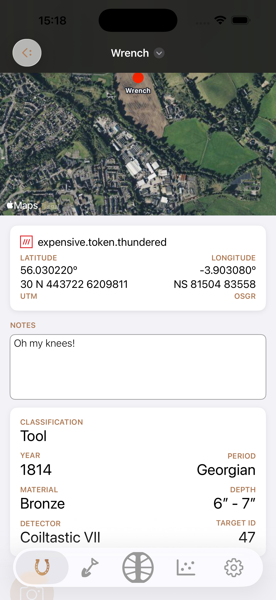
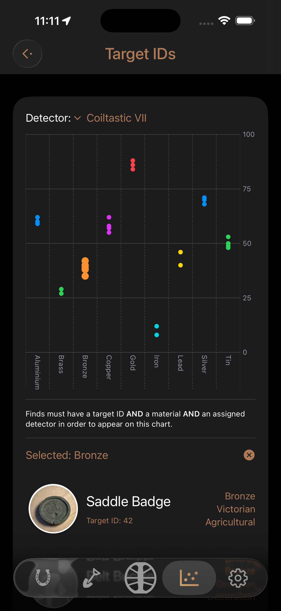
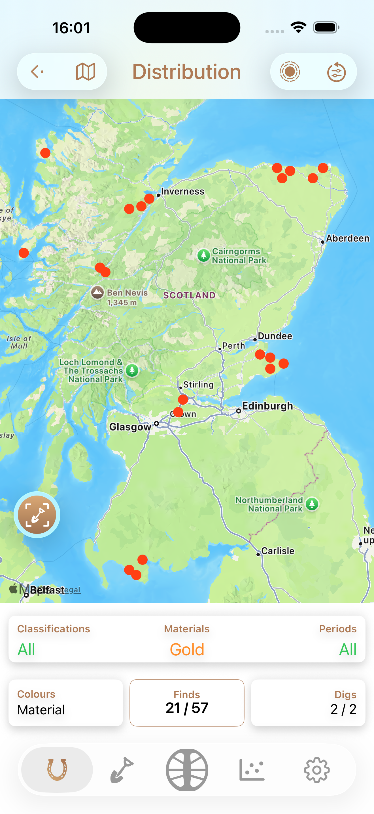
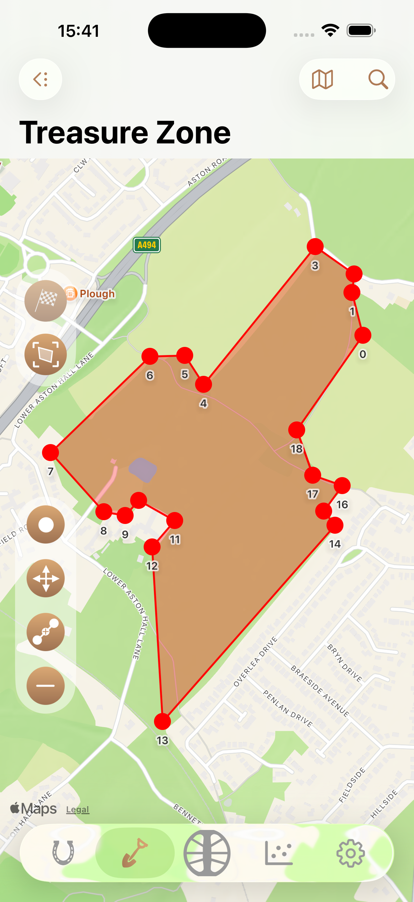
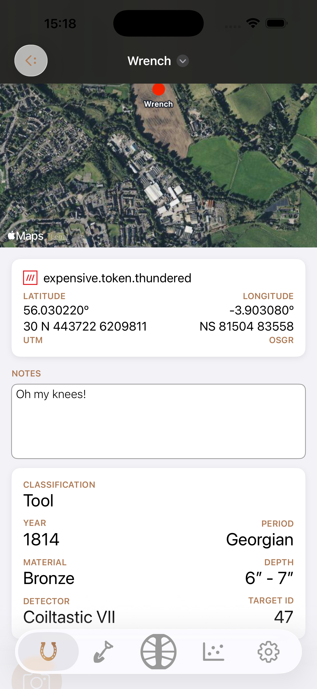
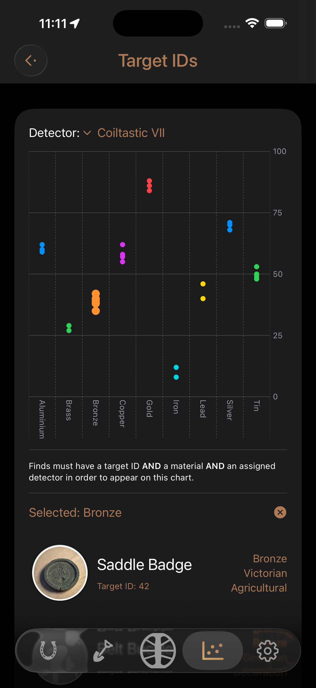
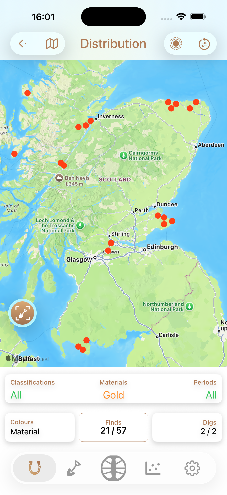
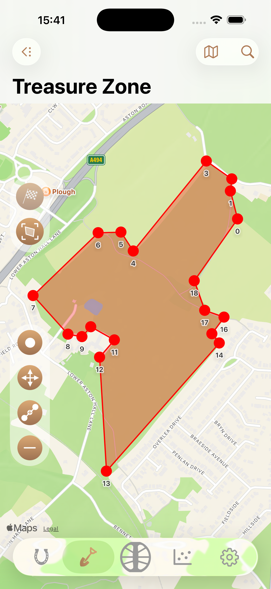

Home | Privacy | FAQ | Support
Last updated: 11 February 2026
SubTerra is a metal detecting log and find tracking application.
 







SubTerra stores data you enter into the app, including find locations, descriptions, and optional photos. Location data is used solely to associate finds with places and is not shared.
All data is stored locally on your device. SubTerra does not transmit your data to external servers.
SubTerra does not use third-party analytics, advertising, or tracking services.
You may delete your data at any time by removing it within the app or deleting the app from your device.
If you have questions about this privacy policy, contact:
subTerraSupport@iCloud.com